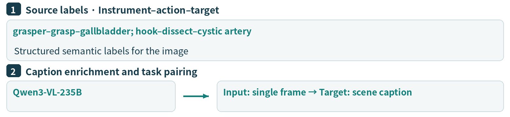
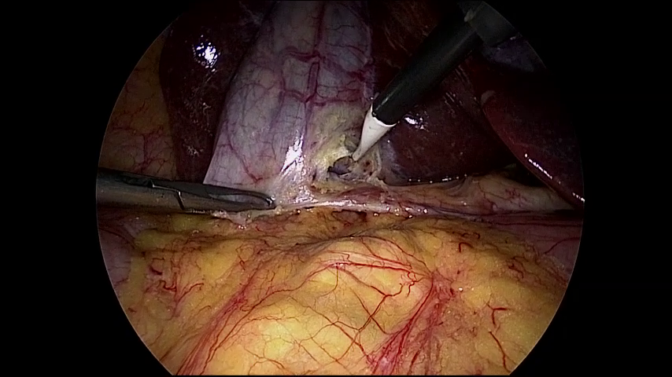
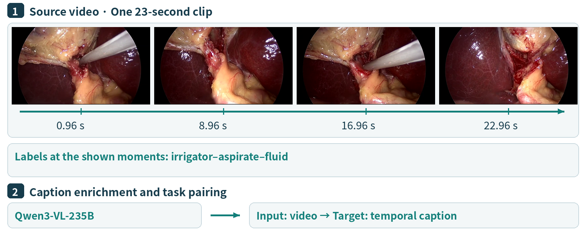
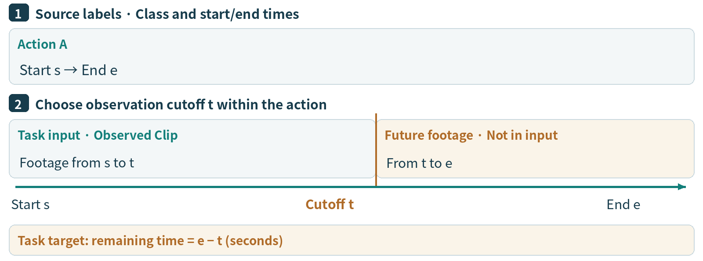
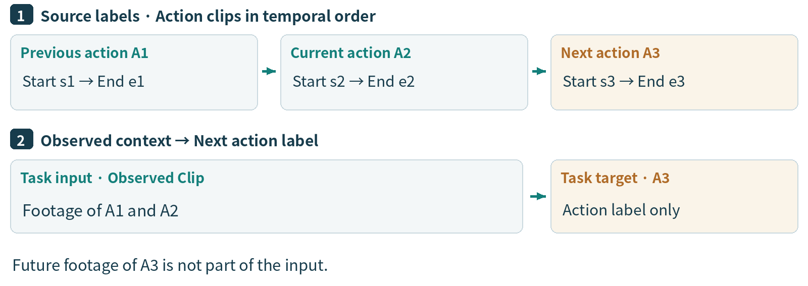
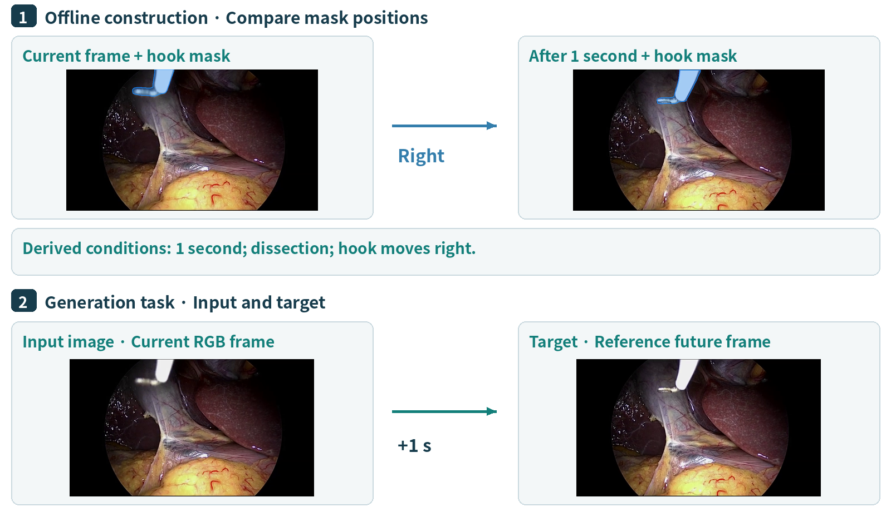
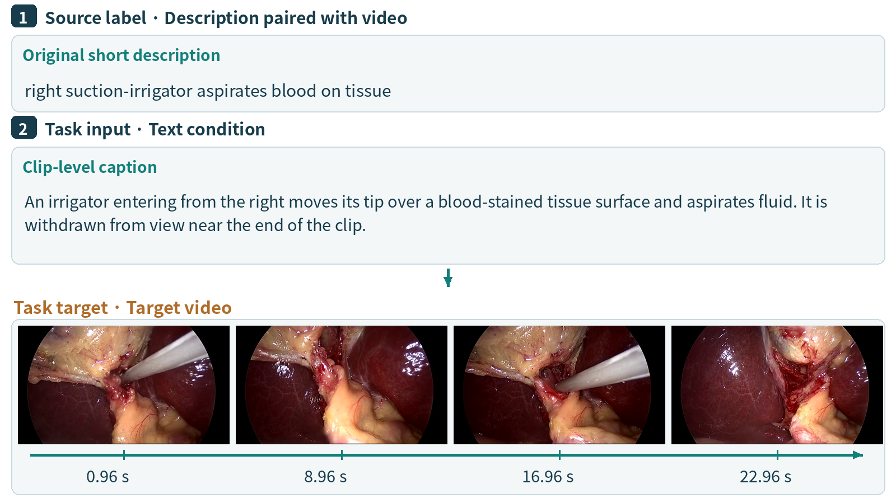

From Surgical Scene Understanding to Prediction and Generation
SurgΣ-DB brings together surgical images, videos and language annotations for understanding, reasoning, planning and generation. This guide introduces seven tasks, showing how source data and labels become task samples. Task numbers follow the SurgΣ project; task 17 is presented here as Next Frame Generation.
A still image captures instruments, tissue and spatial relationships at one moment. Video also captures how actions unfold over time. The illustrated examples depict laparoscopic cholecystectomy, using CholecT50 images and corresponding Cholec80 footage.
The diagrams distinguish source data and labels, construction methods, and task inputs and targets. Source labels include action triplets, time boundaries, descriptions, depth maps and instrument masks. Annotations used to construct targets are not necessarily inputs available to the model.
Contents
No.
Task
Task group
10
Depth Estimation
Understanding and Reasoning
12
Surgical Image Captioning
Understanding and Reasoning
13
Surgical Video Captioning
Understanding and Reasoning
14
Action Remaining Prediction
Planning and Generation
15
Next Action Planning
Planning and Generation
17
Next Frame Generation
Planning and Generation
18
Conditional Surgical Video Generation
Planning and Generation
Video examples can be played in the accompanying HTML guide or opened through the MP4 links in this Markdown document.
Understanding and Reasoning
10 · Depth Estimation
Depth estimation represents the relative depth of instruments and tissue from a single surgical image, supporting spatial perception and geometric modeling. Its output describes relative depth, not distance in physical units.
Input and output: An RGB surgical image → an aligned, single-channel relative depth map.
Source data and labels: An RGB surgical frame. Depth supervision is added as a model-produced pseudo-label, rather than a sensor measurement.
Construction method: Following the published pipeline, Depth Anything V2 produces relative depth D from RGB. The image is the task input and D is the target, with matching field of view and pixel alignment.
Figure 1. The RGB image and corresponding depth pseudo-label form a supervised pair.
Example instruction: Estimate the relative depth of the RGB image on the left and output a single-channel depth map. Target output: The aligned relative depth map on the right.
12 · Surgical Image Captioning
Image captioning expresses a surgical scene in natural language, describing visible instruments, tissue and their relationships.
Input and output: A surgical image → a concise scene description.
Source data and labels: A frame and instrument–action–target triplets. This example has “grasper–grasp–gallbladder” and “hook–dissect–cystic artery” labels.
Construction method: The paper uses Qwen3-VL-235B to enrich incomplete descriptions, forming image–caption pairs. The diagram shows source labels separately from the enrichment step; the exact model prompt remains to be supplied.
Caption-generation prompt: TODO

Figure 2. Structured triplets and natural-language captions are different forms of supervision.
Q: Describe the following surgical image.

A: A grasper entering from the left holds tissue, while a hook entering from the upper right contacts exposed tissue near the center. The liver surface is visible in the background.
13 · Surgical Video Captioning
Video captioning describes actions, instrument movement and changes in their temporal order, extending scene understanding beyond a single image.
Input and output: A surgical video clip → a description of its main action and temporal changes.
Source data and labels: Video with time-aligned action labels. In the example, “irrigator–aspirate–fluid” occurs at each of the four illustrated moments; the caption additionally describes movement and withdrawal.
Construction method: Select a clip and align its existing action labels along its timeline. The paper's Qwen3-VL-235B pipeline enriches incomplete descriptions. Pair the clip with a caption covering the action and its progression.
Caption-generation prompt: TODO

Figure 3. Four moments from one 23-second clip. Times are relative to the start of the video.
A: An irrigator entering from the right moves its tip over a blood-stained tissue surface and aspirates fluid. It is withdrawn from view near the end of the clip.
Planning and Generation
14 · Action Remaining Prediction
Action remaining prediction estimates how many seconds remain until the current basic surgical action ends, using observations available so far.
Input and output: The observed clip and current action information → the remaining duration in seconds.
Source data and labels: Surgical video with an action class, start time s and end time e for each action clip.
Construction method: Set an observation cutoff t within the action. Use footage from s to t as the observed clip. The remaining-time target is e − t; footage after t is not included in the input.

Figure 4. The input is the observed clip. The interval from t to e determines the remaining-time target.
Q: How many seconds remain before the action in the observed clip ends? A: Remaining time = e − t seconds.
15 · Next Action Planning
Next action planning uses current observations and historical context to predict the subsequent surgical action, modeling transitions in the workflow.
Input and output: Observed action context → the next action's category or a short description.
Source data and labels: Temporally ordered action clips, each with a class and start/end times: A1 → A2 → A3.
Construction method: Use the current clip and preceding context as input, and the immediately following clip's label as the target. In the diagram, A1 and A2 form the observed context; A3 supplies the answer, without its footage entering the input.

Figure 5. The next clip's action label supplies supervision for the observed context.
Q: Based on the observed clip, which action comes next? A: A3, the action label immediately following the current clip A2.
17 · Next Frame Generation
Next frame generation produces a surgical image at a specified future time from the current view and supplied conditions, modeling instrument motion and scene changes.
Input and output: A current RGB frame, time interval and action/motion text → a future RGB frame.
Source data and labels: Video frames, action labels and instrument GT masks. This example includes “hook–dissect–omentum”; the blue overlays mark the hook in two frames, 1 second apart.
Construction method: Compare the same instrument's mask positions to form motion-direction text. Combine the current frame, interval and action/motion conditions as input; use the later frame as the target. Future frames and masks are used for offline construction only, not as additional visual inputs. This pair uses 1 second; the subset includes intervals of 1–10 seconds.

Figure 6. Blue overlays show the corresponding instrument masks. The generation task receives only the plain current frame and text conditions.
Example instruction: Generate the surgical image 1 second after the current frame. The action is dissection and the hook moves right. Target output: The reference frame at t + 1 second, shown at the lower right.
18 · Conditional Surgical Video Generation
Conditional video generation produces surgical clips from text, images or their combination. This text-to-video example reverses the pairing used in Surgical Video Captioning: the description becomes the condition and the video becomes the target.
Input and output: A text description of surgical activity → a matching video clip.
Source data and labels: Video paired with a description. The original short label is “right suction-irrigator aspirates blood on tissue.” The completed description also captures movement and withdrawal.
Construction method: Take the clip-level description as the generation condition and the original footage as the supervision target. Video captioning maps video → text; this task maps text → video.

Figure 7. A video–description pair supplies the generation condition and target. The images show successive moments of the target video.
Example instruction: Generate a surgical video matching: “An irrigator entering from the right moves its tip over a blood-stained tissue surface and aspirates fluid. It is withdrawn from view near the end of the clip.” Target output:Watch the target video.
Learn More
The SurgΣ project page and paper, §3.1.2 introduce the task taxonomy. Task 17, titled Next Frame Generation here, corresponds to the project's Next Frame Prediction task. Related work on basic surgical actions is described by BSA.
The depth pseudo-labeling and caption-enrichment methods are described in SurgΣ, §3.1.4: Depth Anything V2 for depth and Qwen3-VL-235B for caption enrichment.
Example images and videos originate from CholecT50 and Cholec80. The next-frame diagram overlays the corresponding CholecInstanceSeg instrument annotations. Follow the project and original dataset license terms when using the data, and cite the corresponding work.
For video playback, open the accompanying HTML guide. The PDF also includes the example MP4 as an attachment; access it through a compatible reader's Attachments panel.